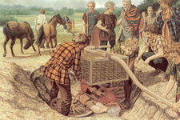

Geología histórica
 De: La Frikipedia, la enciclopedia extremadamente seria.
De: La Frikipedia, la enciclopedia extremadamente seria.
| De la serie ciencias naturales y sociales:
|
| Geología histórica
|
| 
|
| Algo arqueológico y geológico... creo
|
|
| Año de creación
|
Un científico de vacaciones en la playa con una palita que descubrió un estrato de cerámica fosilizada
|
| ¿Sigue en uso?
|
Aburrirse
|
| ¿Que estudia?
|
Montañas, playas, plegamientos fluviales, pokemones...
|
| Científicos que la practican
|
Puf...
|
| Gente "normal" que la practica
|
Desgraciadamente, esta ciencia causa lavado de cerebro
|
| Nivel de frikismo
|
Bajo, pero no tanto
|
¿Para que coño sirve?
|
Descubrir el "pasado" (No se cómo, pero lo hacen)
|
| Dificultad
|
Si la tierra está dura, mucha; sino, poca
|
| Máximo exponente
|
Dumbo
|
| ¿Es recomendable?
|
NO
|
La geología histórica es una pérdida de tiempo una ciencia que estudia gilipolleces la historia de la Tierra a lo largo del tiempo. Gracias a esta ciencia podemos saber hace cuanto que vivió una piedra, un dinosaurio, o tu madre.
Era Protenoseque
Es la primera era de la Tierra, cuando no había nada interesante que hacer. Aun no existían los bollos caos esos. El único que existía era Dios.
- Hentaico: como Dios se aburría hacia dibujos guarros con piedras, de ahí su nombre. En la tierra no había seres vivos, solo había seres muertos como piedras, tierra o árboles.
- Acagárico: fue un periodo en el que Dios estaba todo el día cagando, por eso aunque tenía pensado hacer seres vivos, de momento no pudo ser.
- Paloprotenosequé: aquí Dios creo los palos, por lo demás todo igual, de verdad que era muy aburrido.
- Mesaprotenosque: y Dios junto varios palos para hacer una mesa, así no tenía que comer en el suelo.
- Neoprotenoseque: es lo mismo que antes pero más nuevo, Dios se deshizo de todas las piedras sucias y puso otras nuevas y tal.
Era Palizoica
En la segunda era Dios decidió hacer algo mas divertido y para crear el mundo se dio una paliza descomunal, de ahí el nombre de la era.
- Cábrico: y Dios creo las cabras a imagen y semejanza de los cabrones, que Dios se los imaginaba con cuernos y comiendo hierba. Las hizo para alimentar a los dinosaurios cuando los creara. Así las cabras colonizaron el mundo.
- Orcovícico: como había muchas cabras y a Dios le daba miedo que se rebelaran creó a los orcos viciosos que se las follaban, así que en esta era solo hay orcos follando cabras.
- Salúrico: los orcos también se comían a las cabras pero les faltaba sal, así que en esta era Dios creó la sal.
- Demónico: pero no se dio cuenta de que los orcos se podían fusionar con las cabras y se crearon los demonios, que han estado tocándole los cojones desde entonces.
- Cabronifero: estaban todo el día haciéndose cabronadas, Dios lanzaba meteoritos, los demonios se olvidaban de rezar antes de dormir, etcétera. Nadie es feliz cuando hay mal rollo.
- Perrico: Dios creo a los perros para que mataran a todos los demonios de una vez, pero los demonios huyeron al infierno desde donde planean resurgir algún día, algunos perros aprendieron a domesticar a las cabras y así nació el primer ser humano. Es broma, lo único que consiguieron es ser perros pastores.
Era Mensozoica
Esta era es la que más mola porque están los dinosaurios. El nombre de la era es porque lo descubrió "Tomy el Menso", pero algunos científicos ya llaman a esta era "Era Dinosauriozoica". Lo primero que hizo fue crear mas cosas que no fueran perros para que se las coman los dinosaurios y luego a los dinosaurios.
- Tríptico: entonces dijo Dios "Hagamos al dinosaurio a nuestra imagen y semejanza. Que se coma a los peces del mar y a las aves del cielo, blablabla blablabla". Estas frases son las que están escritas en la Biblia original, aunque los humanos, con ansias de protagonismo, dijeron que era al humano al que creo y que era el ser humano el que tenia imagen y semejanza de Dios (pero no es verdad, Dios necesita dientes y garras afilados para pelear con el diablo). El primer dinosaurio era verde y se sentía solo, pero Chuck Norris le arranco una costilla y haciendo uso de sus conocimientos de clonación y genética creo de ella a la dinosauria, después expuso al dinosaurio a unas sustancias radiactivas y tuvieron distintos tipos de hijos. Concretamente tuvieron 5 hijos, dientecitos, cuernecitos, cuellito, alitas, y aletitas, y de la progenie de cada uno de estos hijos (haciendo uso de mutaciones genéticas para no incestar) se produjeron los 5 tipos de dinosaurios, los dinosaurios con dientes, con cuernos, con cuello largo, con alas y con aletas, que evolucionaron hasta crear todos los dinosaurios que han existido. Durante el Tríptico se produjo ese proceso de clonación genética que servía solo para ir poblando el mundo, nah mas. El nombre es por el tríptico que hizo dios con los mandamientos, pero eso no nos interesa.
- Juarlsico: en el periodo Juarlsico empezó la moda de reírse diciendo "Juarl" que algunos aun siguen. En esta era todos los dinosaurios se movían mucho y comían a otros dinosaurios. También es en esta era cuando la Pangea se separo en los continentes porque Dios se cayo mientras dormía en la tierra y se rompió todo. Cactilio cayó a esta era cuando viajo al pasado.
- Krustyfico: en este periodo se formo el primer ser humano y después ya todos los demás. Los seres humanos convivieron con los dinosaurios y con otros seres como los perros, las cucarachas, y los monos. Muchos dinosaurios se produjeron en esta era al juntar dinosaurios con animales o con humanos. También en esta era se crearon los delfines, la segunda raza mas inteligente de la tierra (los humanos son la tercera). En esta era hubo glaciaciones y cosas así, al final de la era los dinosaurios se extinguieron bajo circunstancias aun sin determinar.
Era Cenazoica
Es en la era en la que se inventó la cena, ya que hasta entonces solo se almorzaba, y como mucho mucho se desayunaba. Tiene dos periodos, el Tresario y el Cuatrorio. También están el Primeroario y el Segundoario pero aun no se han descubierto.
- Terceroario: este periodo es desde que se murieron los dinosaurios hasta que nació Salmón, o Papá Noel son de este periodo.
- Cuartoario: es desde que nació Jesús hasta ahora, no hace falta que os lo cuente porque ya os lo sabéis, el imperio bizarrino, la Edad Media, el chino ese del YouTube que se comió a un perro y demás historias. En esta era se fundo la Frikipedia.
Autor(es):
- Homer Tunder
- Khazike Khashondo
- Harry El del Pote
- Genericool
- Generibot
- Gorack
- Fdecus
Frikipedia 2005-2016, Licencia
GFDL 1.2 - Extraído por FrikiLeaks
 Ciencias
Ciencias